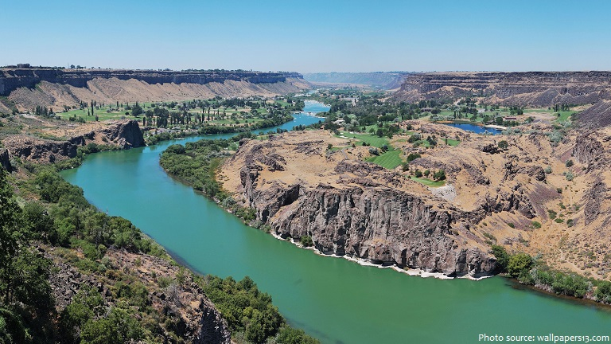
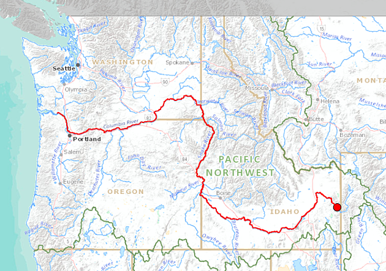
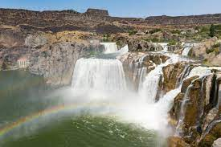

The River
Interesting Facts About the Snake River
- The Snake River likely got its name from the first European explorers who misinterpreted the sign made by the Shoshone people who identified themselves in sign language by moving the hand in a swimming motion which appeared to these explorers to be a “snake.” It actually signified that they lived near the river with many fish. 
- The length of the Snake River is approximately 1,735 kilometers (1,078 miles).
- It is the 9th longest river in the United States.
- The Snake River runs through six different states: Wyoming, Idaho, Nevada, Utah, Oregon and Washington. 
- The Snake River’s average flow is 1,553 cubic meters (54,830 cubic feet) per second.
- There are total of 15 hydroelectric dams on the river.
- Shoshone Falls, located in Twin Falls, Idaho, is located on the Snake River. 
There are many more interestinf facts about the Sanke River, but the best way to learn about it is to experience it! Our river guides will keep you safe and educated as they assist you on your expedition on the River!
Source: Just Fun Facts